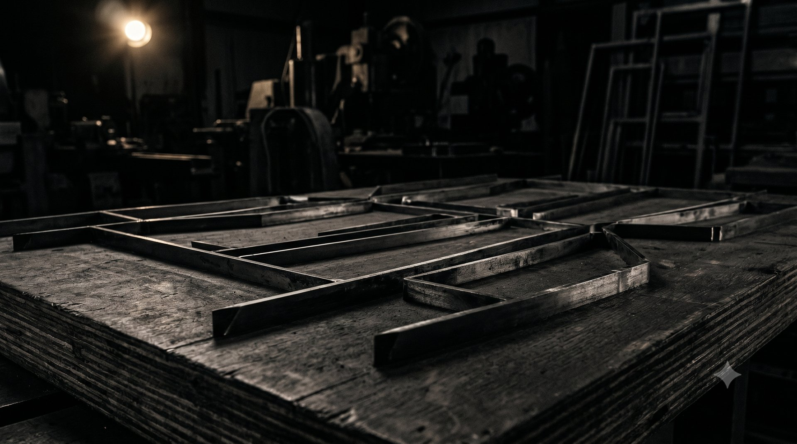
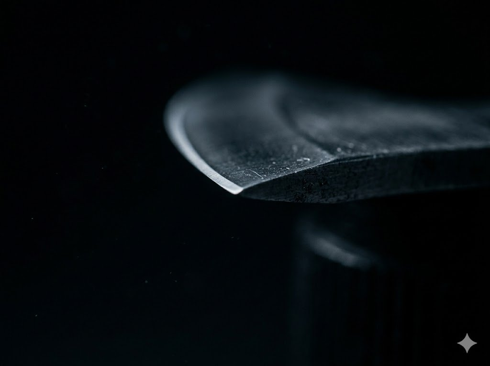
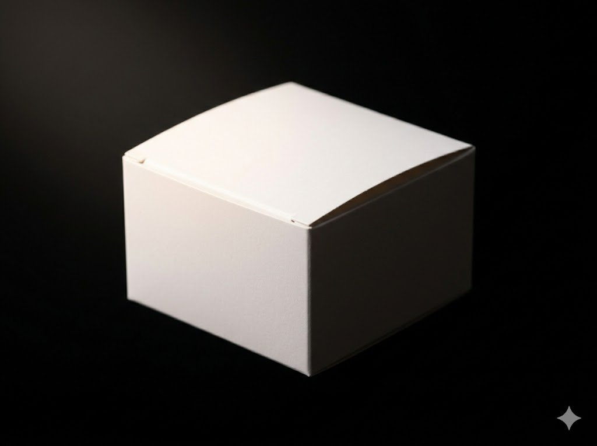
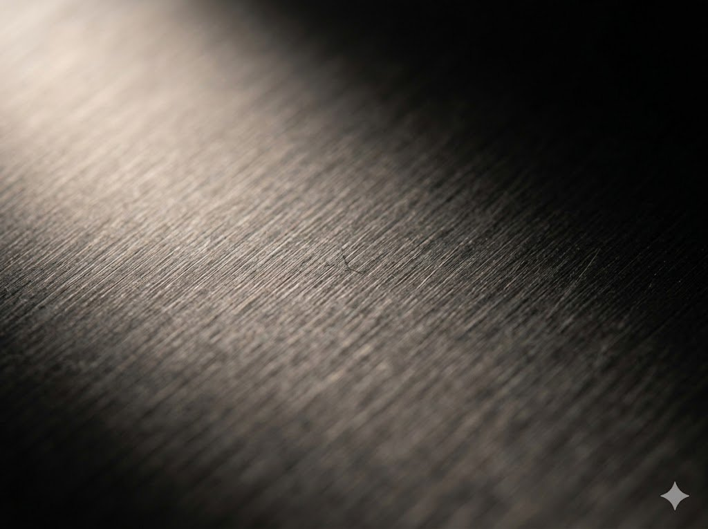
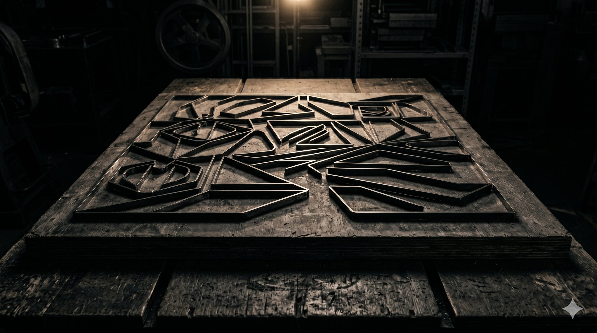
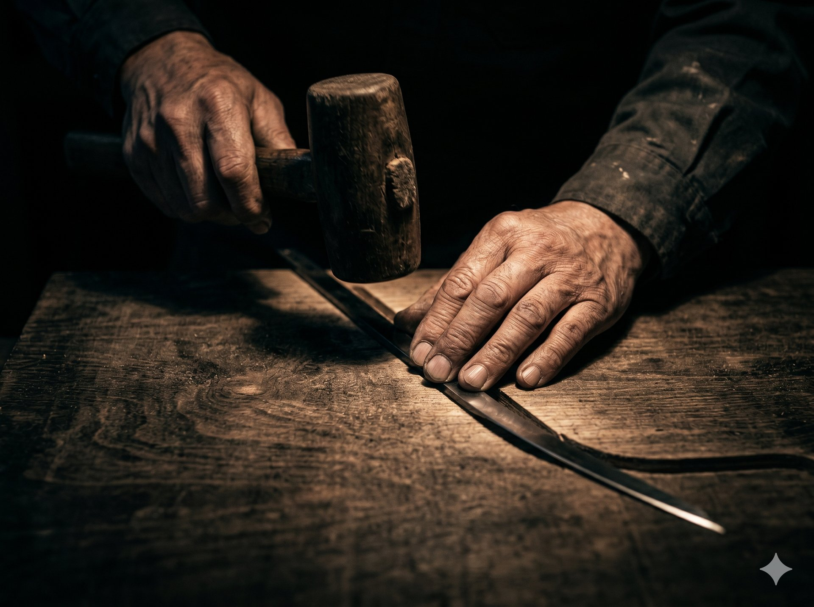

トップ/抜き型／木型
Die Board — 抜き型／木型
材料の選定から設計・刃入れ・出荷前の検査まで、
すべての工程に理由を持つ、私たちの型づくりをご紹介します。
頼れる型は、
理由でできている。
抜き型の仕上がりは、刃を入れる前 — 材料を選ぶ段階から決まっています。合板の反りと密度、刃材の特性、罫線とブリッジの位置。設計・加工・刃入れ・検査のすべての工程で「なぜそうするのか」に答えられる型だけを納めています。
安くつくる工夫よりも、長く正確に抜ける型をつくるほうが、結果としてお客様の損失をいちばん小さくすると考えています。だから、価格の安さでは競いません。
切れ味の持続、抜き跡の抑制、衛生環境への耐性。抜き加工の現場が抱える悩みに応えるため、刃材と工法の開発を続けてきました。現在ご提供している、三つの技術をご紹介します。

型の品質は、初日の一枚ではなく最終日の一枚で評価されるべきだと考えています。CAブレードは、刃先の硬度と粘りのバランスを独自に設計した刃材です。長期ロットでも摩耗の進行を抑え、切り口の毛羽立ちや寸法の変化を最後まで小さく保ちます。刃の交換頻度が下がることで、型替えによる機械の停止時間も抑えられます。

高級パッケージや薄物のコート紙・フィルムでは、抜いた周辺にわずかな圧痕や白化が残るだけで不良になります。アン・アフェクトシステムは、刃と面板まわりの構造を見直し、被加工材に余計な圧力を「与えない（un-affect）」ことを目的とした独自システムです。化粧品や高級菓子など、表面の仕上がりが商品価値に直結する分野でお使いいただいています。

刃材は、使われる環境で選ぶものだと考えています。通常の炭素鋼は切れ味と経済性に優れますが、製造ラインを毎日洗浄する食品工場や、湿度管理の厳しい医療・化粧品の現場では錆が進み、刃の劣化と異物混入の原因になります。ご相談の際は現場の洗浄頻度や湿度条件をうかがい、DP2ステンレスと炭素鋼のどちらが適しているかの判断からご提案します。
上の三つの独自技術に加えて、形状や素材の難しさに応える特殊加工をご用意しています。この中に見当たらないものも、まずはご相談ください。

01
パッケージに点字表示を成形するための加工型
主な用途医薬品・日用品の包装
02
曲げ加工では再現しにくい微細・複雑な刃形状を削り出しで製作
主な用途微細形状・特殊形状の抜き
03
切れ目と罫線を組み合わせ、割れを抑えて正確に折るための罫線
主な用途厚紙・硬質素材の折り曲げ
CAブレード・アン・アフェクトシステム・DP2ステンレスは、独自技術で詳しくご紹介しています。

新規製作だけでなく、修理・改造のご依頼も、対応の可否と納期の目安を当日中にお答えします。できないことは、できないと早くお伝えするのも誠実さだと考えています。
支給データをそのまま型にするのではなく、抜き上がりから逆算して、罫線やブリッジの位置に代案があれば設計段階でご提案します。型は、使われて初めて完成するものだからです。
他社で製作された型の不調も、お断りしません。原因を特定し、直せるものは直し、直せない場合はその理由と作り直しのご提案までお伝えします。型のトラブルで最後に声がかかる存在であることを、誇りにしています。
Contact
新しい型のご相談はもちろん、他社製の型のトラブルや、まだ形になっていないお話でも。まずは状況をお聞かせください。
お電話で
052-XXX-XXXX
受付 平日 9:00–17:00｜名古屋工場本社
担当者が直接お答えします。作業中で出られない場合は、折り返しご連絡いたします。